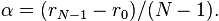
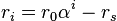

7. horton.grid – Numerical integraton grids¶
7.1. horton.grid.atgrid – Atomic grids¶
- class horton.grid.atgrid.AtomicGrid(number, center, atspec='tv-13.1-3', random_rotate=True, points=None)¶
Arguments:
- center
- The center of the radial grid
- atspec
- A specifications of the atomic grid. (See interpret_atspec for more details.)
Optional arguments:
- random_rotate
- When set to False, the random rotation of the grid points is disabled. Such random rotation improves the accuracy of the integration, but leads to small random changes in the results that are not reproducible.
- points
- Array to store the grid points
- av_weights¶
The weights needed to compute spherical averages.
- center¶
The center of the grid.
- get_spherical_average(args, output=None)¶
Returns the spherical average on the radial grid of the product of the given functions
- nlls¶
The number of Lebedev-Laikov grid points at each sphere.
- nsphere¶
The number of spheres in the grid.
- number¶
The element number of the grid.
- random_rotate¶
The random rotation flag.
- rgrid¶
The radial integration grid
- update_center(center)¶
- horton.grid.atgrid.interpret_atspec(number, atspec)¶
Convert atspec to (rgrid, nlls) tuple
The atspec argument may be a string refering to a built-in grid file (see data/grid) or a tuple with two elements: (rgrid, nll) where:
- rgrid is an instance of RadialGrid.
- nlls is a number Lebedev-Laikov grid points for each radial grid point. When this argument is not a list, all radial grid points get the same Lebedev-Laikov grid
The number argument is the element number for which the grid is created. It is only used when atspec is a string referring to one of the built-in grids.
- horton.grid.atgrid.get_rotation_matrix(axis, angle)¶
Rodrigues’ rotation formula
- horton.grid.atgrid.get_random_rotation()¶
Return a random rotation matrix
7.2. horton.grid.base – Base classes for 3D integration grids¶
- class horton.grid.base.IntGrid(points, weights, subgrids=None)¶
Base class for real-space integration grids in Horton
Arguments:
- points
- A numpy array with shape (npoint,3) with the Cartesian coordinates of the grids points.
- weights
- The integration weights of the grid points
Optional arguments:
- subgrids
- Can be given when this grid is composed of several other grids. The points data is shared, but the weights of the subgrids may be different.
- distances(center, d)¶
Compute distances between all grid points and a center, store result in d.
- eval_spline(cubic_spline, center, output, cell=None)¶
- integrate(*args, **kwargs)¶
Integrate the product of all arguments
Arguments:
- data1, data2, ...
- All arguments must be arrays with the same size as the number of grid points. The arrays contain the functions, evaluated at the grid points, that must be multiplied and integrated.
Optional arguments:
- center
- When given, a multipole moment can be computed with respect to this center instead of a plain integral.
- nx, ny, nz, nr
- The powers that determine the type of moment computed. These can only be given if center is given.
- points¶
The grid points.
- shape¶
The shape of the grid.
- size¶
The size of the grid.
- subgrids¶
A list of grid objects used to construct this grid.
- weights¶
The grid weights.
- zeros()¶
7.3. horton.grid.cext – C++ extensions¶
- horton.grid.cext.lebedev_laikov_npoint(lvalue)¶
Return the number of Lebedev-Laikov grid points for a given angular momentum.
- horton.grid.cext.lebedev_laikov_sphere(grid)¶
Fill the grid with a Lebedev Laikov grid points of a given size.
Arguments:
- points
- The output array for the grid points, shape (npoint,3).
- weights
- The output array for the grid weights, shape (npoint,).
- horton.grid.cext.becke_helper_atom()¶
beck_helper_atom(points, weights, radii, centers, i, k)
Compute the Becke weights for a given atom an a grid.
Arguments:
- points
- The Cartesian coordinates of the grid points. Numpy array with shape (npoint, 3)
- weights
- The output array where the Becke partitioning weights are written. Numpy array with shape (npoint,)
- radii
- The covalent radii used to shrink/enlarge basins in the Becke scheme.
- centers
- The positions of the nuclei.
- select
- The selected atom for which the weights should be created.
- order
- The order of the switching functions. (That is k in Becke’s paper.)
See Becke’s paper for the details: http://dx.doi.org/10.1063/1.454033
- horton.grid.cext.tridiag_solve()¶
- horton.grid.cext.tridiagsym_solve()¶
- class horton.grid.cext.CubicSpline¶
- __call__¶
x.__call__(...) <==> x(...)
- copy_d()¶
- copy_y()¶
- deriv()¶
- rtransform¶
- horton.grid.cext.compute_cubic_spline_int_weights()¶
- horton.grid.cext.index_wrap()¶
- horton.grid.cext.eval_spline_cube()¶
- horton.grid.cext.eval_spline_grid()¶
- class horton.grid.cext.RTransform¶
- chop()¶
- deriv()¶
- deriv_array()¶
- static from_string()¶
Construct a RTransform subclass from a string.
- get_radii()¶
Return an array with radii
- get_volume_elements()¶
Return an array with volume elements associated with the transform
- inv()¶
- inv_array()¶
- npoint¶
- radius()¶
- radius_array()¶
- to_string()¶
- class horton.grid.cext.LinearRTransform¶
A linear grid.
The grid points are distributed as follows:

with

- alpha¶
- chop()¶
- rmax¶
- rmin¶
- to_string()¶
- class horton.grid.cext.ExpRTransform¶
An exponential grid.
The grid points are distributed as follows:

with

- alpha¶
- chop()¶
- rmax¶
- rmin¶
- to_string()¶
- class horton.grid.cext.ShiftedExpRTransform¶
A shifted exponential grid.
The grid points are distributed as follows:

with


- alpha¶
- chop()¶
- r0¶
- rmax¶
- rmin¶
- rshift¶
- to_string()¶
- class horton.grid.cext.BakerRTransform¶
A grid introduced by Baker et al.
The grid points are distributed as follows:
![r_i = A*ln\left[1-\left(\frac{i}{npoint}\right)^2\right]](../_images/math/1cfd7df217592994e9d567042573de659c7b2680.png)
with
![A = \frac{1}{ln\left[1-\left(\frac{npoint-1}{npoint}\right)^2\right]}.](../_images/math/f21f8e6e57210b4b23211773dfdc7ec75fd3105e.png)
- chop()¶
- rmax¶
- scale¶
- to_string()¶
- class horton.grid.cext.UniformGrid¶
- cell¶
- compute_weight_corrections()¶
Computes corrections to the integration weights.
Arguments:
- funcs
A collection of functions that must integrate exactly with the corrected weights. The format is as follows. funcs is a list with tuples that contain three items:
- center: the center for a set of spherically symmetric functions. In pracice, this will always coincide with th position of a nucleus.
- Radial functions specified as a list of splines.
Optional arguments:
- rcut_scale
- For center (of a spherical function), radii of non-overlapping spheres are determined by setting the radius of each sphere at 0.5*rcut_scale*(distance to nearest atom or periodic image).
- rcut_max
- To avoid gigantic cutoff spheres, one may use rcut_max to set the maximum radius of the cutoff sphere.
- rcond
- The regulatization strength for the weight correction equations. This should not be too low. Current value is a compromise between accuracy and transferability of the weight corrections.
Return value:
The return value is a data array that can be provided as an additional argument to the integrate method. This should improve the accuracy of the integration for data that is similar to a linear combination of the provided sphericall functions.
- delta_grid_point()¶
Return the vector from a center to a grid point
Arguments:
- center
- The center
- indexes
- The integer indexes of the grid point (may fall outside of shape)
- dist_grid_point()¶
Return the distance between a center and a grid point
Arguments:
- center
- The center
- indexes
- The integer indexes of the grid point (may fall outside of shape)
- eval_spline()¶
- static from_hdf5()¶
- get_ranges_rcut()¶
Return the ranges if indexes that lie within the cutoff sphere.
Arguments:
- center
- The center of the cutoff sphere
- rcut
- The radius of the cutoff sphere
The ranges are trimmed to avoid points that fall of non-periodic boundaries of the grid.
- get_window()¶
- grid_cell¶
- integrate()¶
Integrate the product of all arguments
Arguments:
- data1, data2, ...
- All arguments must be arrays with the same size as the number of grid points. The arrays contain the functions, evaluated at the grid points, that must be multiplied and integrated.
- origin¶
- pbc¶
- shape¶
- size¶
- to_hdf5()¶
- zeros()¶
- class horton.grid.cext.UniformGridWindow¶
- begin¶
- compute_weight_corrections()¶
- end¶
- eval_spline()¶
- extend()¶
Copy a periodic repetation of the cell function to the local grid
- get_window_ugrid()¶
- integrate()¶
Integrate the product of all arguments
Arguments:
- data1, data2, ...
- All arguments must be arrays with the same size as the number of grid points. The arrays contain the functions, evaluated at the grid points, that must be multiplied and integrated.
Optional arguments:
- center
- When given, a multipole moment can be computed with respect to this center instead of a plain integral.
- nx, ny, nz, nr
- The powers that determine the type of moment computed. These can only be given if center is given.
- shape¶
- size¶
- ugrid¶
- wrap()¶
Write the local function to the periodic array, wrapping around the edges
- zeros()¶
- horton.grid.cext.index_wrap()
- horton.grid.cext.dot_multi()¶
- horton.grid.cext.dot_multi_moments_cube()¶
- horton.grid.cext.dot_multi_moments()¶
- horton.grid.cext.dot_multi_parts()¶
- horton.grid.cext.grid_distances()¶
7.4. horton.grid.int1d – 1D integration algorithms¶
- class horton.grid.int1d.Integrator1D¶
- get_weights(npoint)¶
Return integration weights for linear grid.
- npoint_min = None¶
Base class for integration algorithms
- class horton.grid.int1d.TrapezoidIntegrator1D¶
- get_weights(npoint)¶
Return integration weights for linear grid.
- npoint_min = 2¶
Trapezoid rule integration algorithm
7.5. horton.grid.molgrid – Molecular integration grids¶
- class horton.grid.molgrid.BeckeMolGrid(system, atspecs='tv-13.1-3', k=3, random_rotate=True, keep_subgrids=False)¶
Molecular integration grid using Becke weights
Arguments:
- system
- The System object for which the molecular grid must be made.
- atspecs
- A specifications of the atomic grids. (See below.)
Optional arguments:
- k
- The order of the switching function in Becke’s weighting scheme.
- random_rotate
- Flag to control random rotation of spherical grids.
- keep_subgrids
- By default, no (atomic) subgrids are stored. When set to True, atomic subgrids will be stored. This option is mainly of interest for AIM analysis.
The argument atspecs may have two formats:
- A single atspec tuple: (rgrid, nll) or (rgrid, nlls), where
- rgrid is an instance of the RadialGrid
- nll is the number of Lebedev-Laikov points on each sphere,
- nlls is a list of numbers of Lebedev-Laikov grid points for the respective spheres of the atomic grid.
- A list of atspec tuples as discussed in the foregoing bullet point, one for each atom. The length of this list must equal the number of atoms.
- atspecs¶
The specifications of the atomic grids.
- k¶
The order of the Becke switching function.
- random_rotate¶
The random rotation flag.
- update_centers(system)¶
7.6. horton.grid.radial – 1D Radial integration grid¶
- class horton.grid.radial.RadialGrid(rtransform, int1d=None)¶
An integration grid for the radial component of a spherical coordinate system
- chop(new_size)¶
Return a radial grid with a different number of points.
Arguments:
- new_size
- The new number of radii.
The corresponding radii remain the same.
- int1d¶
The 1D radial integrator object of the grid.
- integrate(*args)¶
Integrate the product of all arguments
Arguments:
- data1, data2, ...
- All arguments must be arrays with the same size as the number of grid points. The arrays contain the functions, evaluated at the grid points, that must be multiplied and integrated.
- radii¶
The positions of the radial grid points.
- rtransform¶
The RTransform object of the grid.
- shape¶
The shape of the grid.
- size¶
The size of the grid.
- weights¶
The grid weights.
- zeros()¶